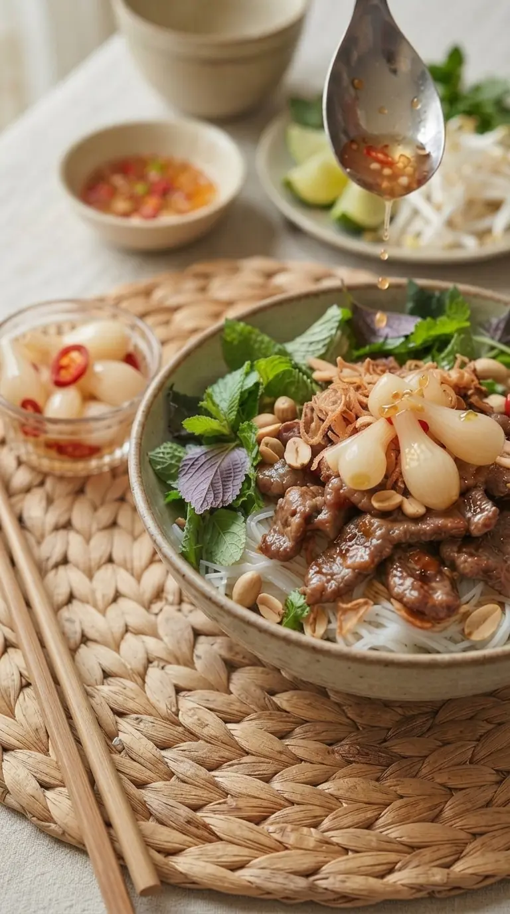
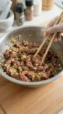
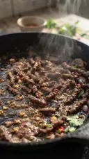
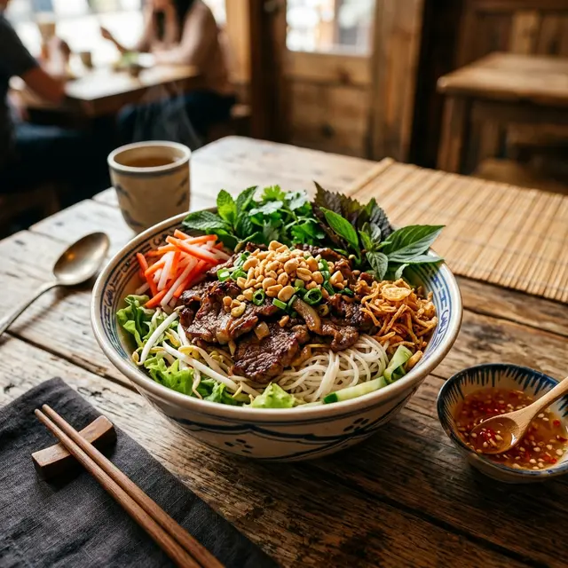
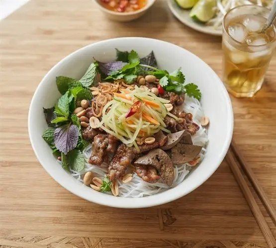
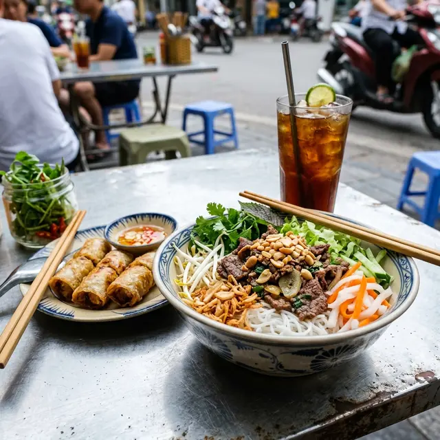
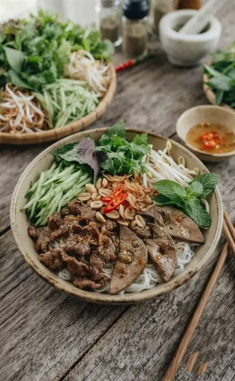
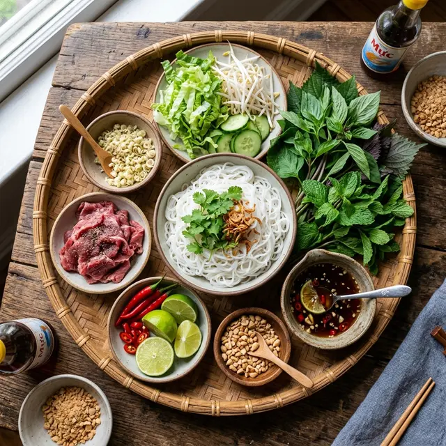

Hạng 81 trong 100 món ăn ngon nhất thế giới 2025
Năm 2025, Tasteatlas đã công bố danh sách giải thưởng Tasteatlas Awards 25/26, Việt Nam vinh dự được chọn là 1 trong 100 nền ẩm thực ngon nhất thế giới (100 Best cusines in the World) và là quốc gia có 3 thành phố ẩm thực được vinh danh trong 100 Thành phố có nền ẩm thực ngon nhất thế giới (100 Best food cities): #36 Huế, #47 Hà Nội, #60 TP. Hồ Chí Minh. Trong đó khu vực miền trung được vinh danh xếp hạng #27 ở hạng mục 100 vùng miền ẩm thực ngon nhất thế giới (100 Best Food Regions). Hai món được gọi tên ở hạng mục 100 món ăn ngon nhất thế giới (100 Best dishes): #81 Bún bò xào (Southern Vietnames Beef Noodle Salad) và #83 Phở bò (Beef pho).
Bún bò xào là một món ăn truyền thống của miền nam Việt Nam. Tên món ăn đã chứa đựng và nói lên tên thành phần chính, thì bò được nêm ướp đậm vị, sau đó được xào chín cho cháy cạnh, ăn cùng với bún là các loại rau thơm tươi mát (húng quế, húng lủi, diếp cá, tía tô, giá đỗ, hành lá, sà lách, ngò rí) và các loại củ quả (dưa leo, củ cà rốt, hành tây, hành tím, ớt, chanh...). Tất cả được sắp xếp vào một chiếc tô, trong khi thịt, củ cải ngâm chua, đậu phộng rang và hành phi sẽ được đặt ở trên cùng. Nước mắm tỏi ớt chua ngọt sẽ là chất liên kết làm cho các thành phần trở nên ngon và cuốn hút hơn . Khi ăn sẽ dùng đũa để trộn đều các thành phần.
Sinh ra từ miền Nam, lớn lên cùng miền Bắc

Phong cách miền Nam tươi mới, đậm đà và dung hoà mọi thứ
Hương vị miền Nam: bún tươi, rau sống, thịt heo xào sả, hành tây, hành tím, nước mắm tỏi ớt chua ngọt, đậu phộng rang thơm.
Bún bò Nam Bộ: Quán bún bò xào đầu tiên ở Hà Nội
Những năm đầu 1980, bà nội của bà Hải Sẹo, là người phụ nữ miền Nam đầu tiên truyền dạy con cháu cách chế biến món bún bò xào, mẹ của bà Hải Sẹo là thế hệ thứ hai của gia đình đã mở quán tại đường Nam Bộ, một con phố nhỏ ở khu vực Hoàn Kiếm, Hà Nội lúc bấy giờ. Sau con đường Nam Bộ được đổi tên thành đường Lê Duẩn. Biến tấu rõ ràng nhất mang hơi hướng miền Bắc là chuyển nguyên liệu chính từ thịt heo thành thịt bò, thêm hành phi khô (topping đặc trưng của bánh cuốn, xôi xéo, bún mộc...), sử dụng giấm thay cho chanh trong các pha nước mắm.
Khẳng định vị thế hương vị riêng của Bún bò xào Nam Bộ
Đây là những năm được ghi nhận có nhiều quán bún thịt xào ở các tỉnh miền Tây Nam Bộ, với nhiều thành phần được dung nạp vào món ăn, có nơi có cho thêm gan heo xào, chả giò, rau cần nước, và cả đường rắc lên mặt tô bún. Còn riêng miền Bắc ghi nhận có nhiều quán được mở tập trung ở Hà Nội, Bún bò Nam Bộ của miền Bắc vẫn giữ nguyên thành phần công thức thịt bò xào. Người Việt đi và ở khắp năm châu đã mang theo món bún thịt xào và bún bò Nam Bộ để giới thiệu cho bạn bè thế giới.
TasteAtlas vinh danh Bún bò Nam Bộ
TasteAtlas xếp hạng bún bò Nam Bộ ở vị trí 81 trong 100 món ngon nhất thế giới năm 2025. Từ món ăn vỉa hè bình dân trở thành đại diện văn hóa ẩm thực Việt Nam.
Nấu bún bò xào tại nhà
Công thức cho 2 phần ăn, làm theo phong cách miền Bắc: bò xào sả hành, nước mắm chua ngọt, rau sống và đậu phộng rang, hành phi.
Nguyên liệu
THỊT & BÚN
- 250g thịt bò thăn hoặc bắp bò, thái mỏng
- 200g bún tươi, sợi nhỏ hoặc nhỏ vừa
ƯỚP THỊT
- 1 muỗng cafe tỏi băm
- 1 muỗng cafe hành tím băm
- 1 muỗng canh sả băm
- 2 muỗng cafe nước tương (xì dầu)
- 1 muỗng cafe bột ngọt
- 1 muỗng dầu mè
- 1/4 muỗng cafe muối
- 1/2 muỗng cafe tiêu
- 1 muỗng canh nước mắm
- 1 muỗng cafe dầu hào
NƯỚC MẮM CHUA NGỌT
- 3 muỗng canh nước mắm
- 3 muỗng canh đường
- 2 muỗng canh nước cốt chanh
- 2 muỗng canh nước ấm
- 1 muỗng cafe tỏi băm
- 1 muỗng cafe ớt băm
RAU & ĐỒ ĂN KÈM
- 1 củ hành tây cắt múi cau
- Rau sống: húng quế, húng lủi, diếp cá, tía tô, giá đỗ, hành lá, sà lách, ngò rí
- 1 quả dưa leo bào sợi
- 1/2 củ cà rốt bào sợi
- 70g hành phi
- 100g đậu phộng rang chín, đập nhuyễn 3/7
- 1/2 chén giấm ăn
- 2 muỗng canh đường
Các bước chế biến

1. ƯỚP THỊT
Trộn bò với sả, tỏi, hành tím, đường, nước mắm, tiêu, dầu hào, bột ngô, nước tương, dầu mè. Để ngấm 15-20 phút.
2. PHA NƯỚC MẮM CHUA NGỌT
Khuấy tan đường trong nước ấm, sau đó cho nước mắm, nước cốt chanh/giấm, nêm nếm cho cân bằng chua-ngọt, thêm tỏi ớt, cà rốt bào sợi.
3. RAU & ĐỒ ĂN KÈM
Rau lựa sạch, cắt khúc vừa ăn, rau mùi chỉ lấy lá, dưa leo bào sợi, hành lá cắt vuông, đậu phộng rang vừa chín tới, tách bỏ vỏ, giã nhuyễn 3/7. Đồ chua: củ cà rốt thái sợi, ngâm đường trước, sau đó cho giấm vào ngâm 10 phút.

4. XÀO THỊT BÒ VÀ TRÌNH BÀY
Chảo đáy dày/chảo gang phải được làm nóng già, thêm dầu ăn, lửa lớn cho thịt bò đã ướp vào xào nhanh tay trong 2-3 phút, xào cho thịt bò vừa chín tới cháy cạnh thì cho giá đỗ và hành lá vào xào một lượt sơ qua 5-6 lần, không để cho cọng giá đỗ chín quá, thì đổ ra tô bún đã được bắt sẵn cùng với rau. Thêm đậu phộng, hành phi, đồ chua lên mặt bún. Khi ăn thì cho thêm nước mắm và trộn lên.
Địa chỉ các quán bún bò xào nổi tiếng
Danh sách các quán ăn danh tiếng tại Hà Nội, TP.HCM, Cần Thơ, Nha Trang và Đà Nẵng. Bấm vào từng quán để xem vị trí, chỉ đường và đánh giá thực tế trên Google Maps.
Bún Bò Nam Bộ Bách Phương
Hà NộiQuán bún bò Nam Bộ lâu đời và nổi tiếng nhất thủ đô từ năm 1986, thu hút rất nhiều thực khách trong nước và quốc tế.
Bún Bò Nam Bộ Hải Sẹo
Hà NộiQuán quen thuộc phố cổ với hương vị thịt bò xào đậm đà, nước trộn vừa miệng và nhiều rau sống tươi ngon.
Cô Tuân — Bún Bò Nam Bộ
Hà NộiQuán bún bò Nam Bộ nức tiếng với thịt bò mềm thơm ngấm vị, nước mắm pha chua ngọt dịu thanh.
Bún Bò Phương Ngọc
TP. Hồ Chí MinhThịt bò tươi xào đậm đà lửa lớn, ăn kèm bún tươi, đậu phộng rang giòn thơm và nước mắm chua ngọt chuẩn vị Sài Gòn.
Bún Chả & Bún Bò Cửu Long
TP. Hồ Chí MinhKhông gian lịch sự mát mẻ, phục vụ bún bò xào và ẩm thực Bắc tinh tế, thịt bò mềm thơm ngập tràn rau sống.
Bún Thịt Xào Chả Giò Tiều Cô Ba
Cần ThơQuán ăn gia truyền trứ danh Cần Thơ, bún thịt xào sả ớt thơm lừng ăn cùng chả giò Tiều chiên vàng giòn rụm khó quên.
Tiệm Bún A Nhỉu
Cần ThơKhông gian gần gũi thân thiện, đồ ăn tẩm ướp đậm đà, nước mắm pha vị miền Tây thanh ngọt dễ chịu.
Bún Bò Hương Giang
Nha TrangThương hiệu bún bò nổi tiếng hàng đầu phố biển Nha Trang, hương vị hài hòa, bò xào mềm thơm và rau sống tươi sạch.
Quán Bún Bò Huế 100
Nha TrangQuán ăn lâu đời quen thuộc của người dân Nha Trang, tô bún đầy đặn ngập tràn thịt bò tươi ngon và rau ghém mơn mởn.
Bún Bò Bà Xin
Đà NẵngQuán bún lâu năm trong hẻm Triệu Nữ Vương, vị bò xào sả ớt miền Trung cay nồng thơm lừng khó quên.
Bún Bò Bà Rơi (Michelin Selected)
Đà NẵngQuán ẩm thực vinh dự được Michelin vinh danh, nổi danh với thịt bò hảo hạng, hương vị đậm đà và chất lượng vượt trội.
Bún Bò Nam Bộ Bách Phương
4.5 (3.200+ đánh giá)Các biến tấu của Bún bò xào

Bún tươi, thịt bò xào cháy cạnh, sả và hành tây, hành phi — công thức gốc miền Nam.

Khẩu vị khoái ngọt của người miền Tây: rắc thêm đường trên mặt tô bún thịt xào.

Biến tấu phổ biến: thêm chả giò giòn rụm và nem nướng, mỡ hành.

Bún thịt xào miền Tây được xào cùng với một ít gan heo.

Rau mùi được thêm vào tạo sự xanh mát: rau mùi, rau cần nước, diếp cá, ...
Không gian quán nhỏ, bàn thấp — bún bò xào phố cổ với vị thanh nhẹ, ăn kèm rau sống và giấm chua.
Chuyện quán, chuyện vị
Bún bò xào lọt top 100 món ăn ngon nhất thế giới 2025
Một món ăn bình dân của hàng quán vỉa hè Việt Nam được xướng tên cùng những cái tên lừng danh thế giới.
Danh sách quán bún bò xào nổi tiếng ở Việt Nam.
Tổng hợp những quán bún bò xào và bún bò Nam Bộ nức tiếng tại Hà Nội, TP.HCM, Cần Thơ, Nha Trang và Đà Nẵng.
Ăn bún bò xào thế nào cho đúng vị
Trộn trước khi ăn, chan nước mắm từng chút một và đừng bỏ qua rau sống.
Cái nôi Bún bò xào đến bàn ăn Thế giới
Từ một món ăn dân dã thấm đượm hương vị miền Nam, bún thịt xào đã có màn lột xác ngoạn mục để chinh phục khẩu vị quốc tế.
Nguồn của phần lịch sử và nguồn gốc
Phần lịch sử hình thành và nguồn gốc của Bún bò xào trong trang này được tổng hợp từ các nguồn dưới đây. Đây là trang cộng đồng; thông tin được đối chiếu nhưng không phải tài liệu học thuật chính thức.
TasteAtlas — 100 món ăn ngon nhất thế giới 2025
Danh sách xếp hạng chính thức nơi Bún Bò Xào được trao vị trí #81 toàn cầu.
Món Ăn Việt Nam: Các Món Bún - Phở - Miến
Sách ẩm thực truyền thống giới thiệu các món bún nước và bún trộn đặc trưng.
Báo Ngôi Sao (VnExpress) — Vì sao có tên gọi bún bò Nam Bộ?
Tài liệu phỏng vấn lịch sử về nguồn gốc quán bún bò Nam Bộ đầu tiên tại Hà Nội.
VnExpress — Cách pha nước mắm chua ngọt tỏi ớt luôn nổi
Công thức chi tiết và bí quyết pha nước mắm tỏi ớt chua ngọt chuẩn vị Việt Nam.
Sách: Ẩm Thực Ba Miền
Tổng hợp văn hóa ẩm thực và sự giao thoa khẩu vị đặc sắc giữa miền Bắc, Trung, Nam.
CNN Travel — Vietnam street food: 40 delicious dishes you'll want to try
Cẩm nang ẩm thực đường phố Việt Nam được vinh danh trên kênh truyền hình quốc tế CNN.